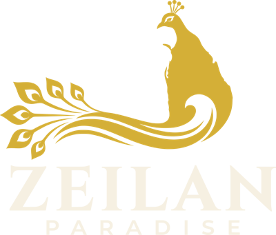

For travel agents · Inbound Sri Lanka
Private Sri Lanka journeys for your clients
Zeilan Paradise is an inbound Sri Lanka tour business for UK travellers and travel agents. We offer 10 private round tours and 8 day tours, each tailored to your clients.
10 private round tours
| Journey · ideal for | Length | Best time | Route |
|---|---|---|---|
| Sri Lanka HighlightsFirst-time visitors short on time | 8 days · 7 nights | December – April | Negombo → Sigiriya → Kandy → Galle |
| Classic Ceylon & CoastFirst-time couples | 14 days · 13 nights | December – April | Negombo → Sigiriya → Kandy → Nuwara Eliya → Ella → Mirissa |
| Untamed Sri Lanka: Cloud Forests, Leopards & WhalesWildlife and nature lovers | 12 days · 11 nights | February – April | Wilpattu → Sigiriya → Kandy → Nuwara Eliya → Yala → Mirissa |
| Summer Family AdventureFamilies with children | 15 days · 14 nights | July – August | Negombo → Kandy → Nuwara Eliya → Ella → Arugam Bay → Pasikuda → Sigiriya → Negombo |
| Footprints in the Hills & Northern FrontiersRepeat visitors and curious explorers | 15 days · 14 nights | February – April, July – September | Negombo → Anuradhapura → Jaffna → Trincomalee → Sigiriya → Kandy → Hatton |
| Honeymoon: Tea Hills & Southern BeachesHoneymooners and anniversary couples | 11 days · 10 nights | December – April | Negombo → Sigiriya → Kandy → Hatton → Ella → Tangalle |
| Ayurveda & Wellness RetreatWellness seekers and solo travellers | 10 days · 9 nights | Year-round (best Dec–Apr) | Kandy → Hatton → Bentota |
| East Coast Summer EscapeCouples travelling in the UK summer | 11 days · 10 nights | May – September | Negombo → Sigiriya → Trincomalee → Pasikuda → Kandy |
| Tea Trails & Pekoe Trail WalkingActive walkers | 10 days · 9 nights | January – April | Negombo → Kandy → Hatton → Ella → Galle |
| Grand ExplorerTravellers who want to see it all | 16 days · 15 nights | December – April | Negombo → Anuradhapura → Sigiriya → Kandy → Hatton → Ella → Yala → Galle |
Every itinerary is a starting point: we tailor the route, hotels and pace to each client.
Talk to us
Yasintha AgampodiFounder
+44 7818 792995 · WhatsApp
info@zeilanparadise.com
zeilanparadise.com
Agent enquiries
zeilanparadise.com/agents
zeilanparadise.com/agents